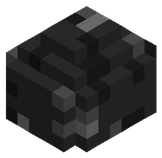 Carbón | 1 | todo el mundo | 5 – 80 | 22 | Arboleda de Otoño |
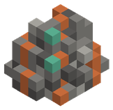 Mena de cobre | 1 | 0 – 1,5 km | 20 – 80 | 10 | Llanura, Bosque |
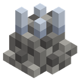 Mena de estaño | 1 | 0 – 1,5 km | 20 – 80 | 8 | Bosque, Río |
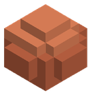 Arcilla roja | 1 | 0 – 1,5 km | 30 – 80 | 6 | Río, Arboleda de Otoño |
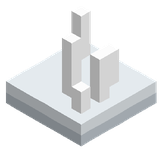 Salitre | 1 | 0 – 1,5 km | 30 – 80 | 4 | Playa |
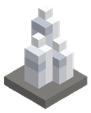 Cuarzo lechoso | 1 | 0 – 1,5 km | 20 – 80 | 4 | Río, Pradera Floral |
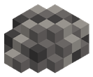 Sílex | 1 | 0 – 1,5 km | 30 – 80 | 6 | Llanura, Playa |
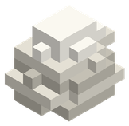 Yeso | 1 | 0 – 1,5 km | 30 – 80 | 4 | Playa, Pradera Floral |
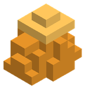 Ámbar fosilizado | 1 | 0 – 1,5 km | 30 – 80 | 3 | Bosque, Pradera Floral, Arboleda de Otoño |
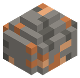 Mena de hierro | 2 | desde 1,5 km | 5 – 60 | 12 | Sabana, Montaña |
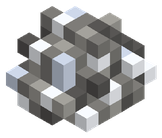 Mena de plata | 2 | 1,5 – 4 km | 5 – 50 | 5 | Montaña, Tierras nevadas, Taiga de Pinos |
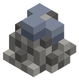 Mena de plomo | 2 | 1,5 – 4 km | 5 – 50 | 5 | Pantano, Tierras nevadas, Taiga de Pinos |
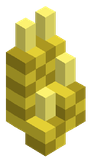 Azufre | 2 | 1,5 – 4 km | 5 – 60 | 4 | Pantano |
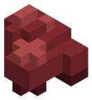 Hematita | 2 | 1,5 – 4 km | 5 – 50 | 5 | Montaña, Desierto, Cañón de Arcilla |
| Lapislázuli | 2 | 1,5 – 4 km | 5 – 50 | 3 | Pantano, Océano |
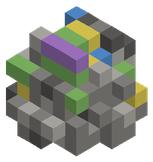 Calcopirita | 2 | 1,5 – 4 km | 5 – 60 | 4 | Océano, Desierto, Cañón de Arcilla |
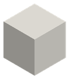 Mármol | 2 | 1,5 – 4 km | 10 – 70 | 5 | Océano, Tierras nevadas, Taiga de Pinos |
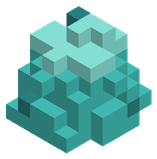 Turquesa | 2 | 1,5 – 4 km | 10 – 60 | 3 | Sabana, Desierto, Cañón de Arcilla |
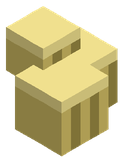 Pirita | 2 | 1,5 – 4 km | 10 – 60 | 4 | Sabana |
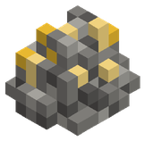 Mena de oro nativo | 3 | 4 – 10 km | 5 – 50 | 6 | Desierto, Selva |
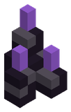 Obsidiana volcánica | 3 | 4 – 10 km | 5 – 40 | 5 | Océano, Pantano, Océano Profundo, Selva de Manglares |
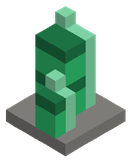 Esmeralda | 3 | 4 – 10 km | 5 – 45 | 3 | Selva, Pantano, Selva de Manglares |
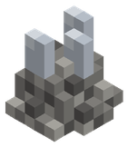 Mena de titanio | 3 | 4 – 10 km | 5 – 55 | 6 | Tierras nevadas, Sabana, Llanura, Estepa Ventosa |
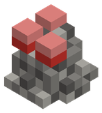 Cinabrio | 3 | 4 – 10 km | 5 – 50 | 4 | Desierto, Selva, Bosque de Bambú Ancestral |
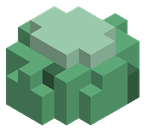 Jade imperial | 3 | 4 – 10 km | 5 – 55 | 4 | Selva, Bosque, Bosque de Bambú Ancestral |
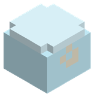 Hielo fósil | 3 | 4 – 10 km | 10 – 70 | 4 | Tierras nevadas |
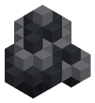 Magnetita negra | 3 | 4 – 10 km | 5 – 45 | 4 | Tierras nevadas, Océano, Océano Profundo |
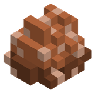 Bauxita | 3 | 4 – 10 km | 10 – 60 | 5 | Sabana, Llanura, Bosque, Bosque de Bambú Ancestral, Estepa Ventosa |
| Topacio solar | 3 | 4 – 10 km | 10 – 60 | 3 | Desierto, Sabana, Llanura, Estepa Ventosa |
| Perla abisal | 3 | 4 – 10 km | 5 – 45 | 3 | Océano, Pantano, Océano Profundo, Selva de Manglares |
| Mena de mithril | 4 | 10 – 20 km | 5 – 45 | 6 | Bosque, Tierras nevadas, Bosque de Hongos Gigantes, Glaciares de Hielo Azul |
| Rubí de fuego | 4 | 10 – 20 km | 5 – 45 | 4 | Montaña, Desierto, Picos Volcánicos, Oasis Místico |
| Zafiro glacial | 4 | 10 – 20 km | 5 – 50 | 4 | Tierras nevadas, Bosque, Pantano, Bosque de Hongos Gigantes, Glaciares de Hielo Azul |
| Corazón de basalto | 4 | 10 – 20 km | 5 – 50 | 5 | Montaña, Picos Volcánicos |
| Esporita fosfórica | 4 | 10 – 20 km | 5 – 50 | 4 | Bosque, Pantano, Bosque de Hongos Gigantes, Bosque Umbrío |
| Hielo azul eterno | 4 | 10 – 20 km | 10 – 75 | 4 | Tierras nevadas, Montaña, Glaciares de Hielo Azul, Cumbres Nubosas |
| Obsidiana del ocaso | 4 | 10 – 20 km | 5 – 45 | 4 | Bosque, Pantano, Bosque Umbrío |
| Electro natural | 4 | 10 – 20 km | 5 – 50 | 4 | Montaña, Desierto, Picos Volcánicos, Oasis Místico |
| Aerolita | 4 | 10 – 20 km | 20 – 80 | 3 | Bosque, Montaña, Bosque Umbrío, Cumbres Nubosas |
| Cristal espejismo | 4 | 10 – 20 km | 10 – 60 | 3 | Desierto, Montaña, Oasis Místico, Cumbres Nubosas |
| Adamantio carmesí | 5 | 20 – 40 km | 5 – 50 | 6 | Ciénaga Tóxica, Páramo de Ceniza, Montaña, Pantano |
| Amatista resonante | 5 | 20 – 40 km | 5 – 60 | 4 | Bosque de Espigas de Cristal, Fosa Abisal, Montaña, Océano |
| Oricalco dorado | 5 | 20 – 40 km | 5 – 60 | 5 | Selva Primordial, Bosque de Espigas de Cristal, Selva, Bosque |
| Sulfurita negra | 5 | 20 – 40 km | 5 – 50 | 4 | Páramo de Ceniza, Páramo de la Corrupción, Desierto, Montaña |
| Fósil dracónico | 5 | 20 – 40 km | 10 – 60 | 4 | Páramo de Ceniza, Selva Primordial, Desierto, Selva |
| Cristal de sombra | 5 | 20 – 40 km | 5 – 45 | 4 | Yermo Helado Estigio, Páramo de la Corrupción, Tierras nevadas, Bosque |
| Vitriolo verde | 5 | 20 – 40 km | 5 – 55 | 4 | Ciénaga Tóxica, Bosque de Espigas de Cristal, Pantano |
| Escarcha estigia | 5 | 20 – 40 km | 10 – 70 | 4 | Yermo Helado Estigio, Fosa Abisal, Tierras nevadas, Océano |
| Perla del leviatán | 5 | 20 – 40 km | 5 – 40 | 3 | Fosa Abisal, Océano |
| Platino puro | 5 | 20 – 40 km | 5 – 50 | 5 | Selva Primordial, Yermo Helado Estigio, Selva, Tierras nevadas |
| Sangre de hierro | 5 | 20 – 40 km | 5 – 50 | 4 | Ciénaga Tóxica, Páramo de la Corrupción, Pantano |
| Eterio cósmico | 6 | 40 – 64 km | 10 – 80 | 5 | Bosque Celestial, Cumbres de la Tormenta Eterna, Bosque, Montaña |
| Magma primigenio | 6 | 40 – 64 km | 5 – 50 | 4 | Núcleo Ígneo, Desierto de Vidrio, Desierto, Montaña |
| Materia del vacío | 6 | 40 – 64 km | 5 – 50 | 5 | Grieta del Vacío, El Borde del Mundo, Pantano, Tierras nevadas |
| Fulgurita celeste | 6 | 40 – 64 km | 20 – 80 | 4 | Cumbres de la Tormenta Eterna, Archipiélago Flotante, Montaña |
| Marfil de titán | 6 | 40 – 64 km | 10 – 60 | 4 | Valle de los Titanes, Llanura, Sabana |
| Gravitón puro | 6 | 40 – 64 km | 10 – 80 | 4 | Bosque Celestial, Grieta del Vacío, Archipiélago Flotante, Bosque |
| Prisma solar | 6 | 40 – 64 km | 10 – 60 | 4 | Desierto de Vidrio, El Borde del Mundo, Desierto |
| Cronolita | 6 | 40 – 64 km | 5 – 55 | 4 | Núcleo Ígneo, Valle de los Titanes, Desierto, Llanura |
| Astralita | 6 | 40 – 64 km | 10 – 80 | 4 | Bosque Celestial, Archipiélago Flotante, Bosque, Llanura |
| Obsidiana del vacío | 6 | 40 – 64 km | 5 – 45 | 4 | Núcleo Ígneo, Grieta del Vacío, Montaña, Pantano |
| Tormentita | 6 | 40 – 64 km | 10 – 70 | 4 | Cumbres de la Tormenta Eterna, Desierto de Vidrio, Montaña, Desierto |
| Esencia del Origen | 6 | 40 – 64 km | 5 – 40 | 2 | Valle de los Titanes, El Borde del Mundo |